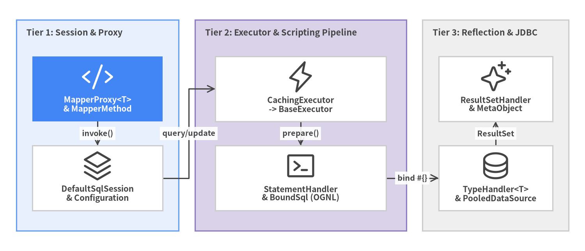
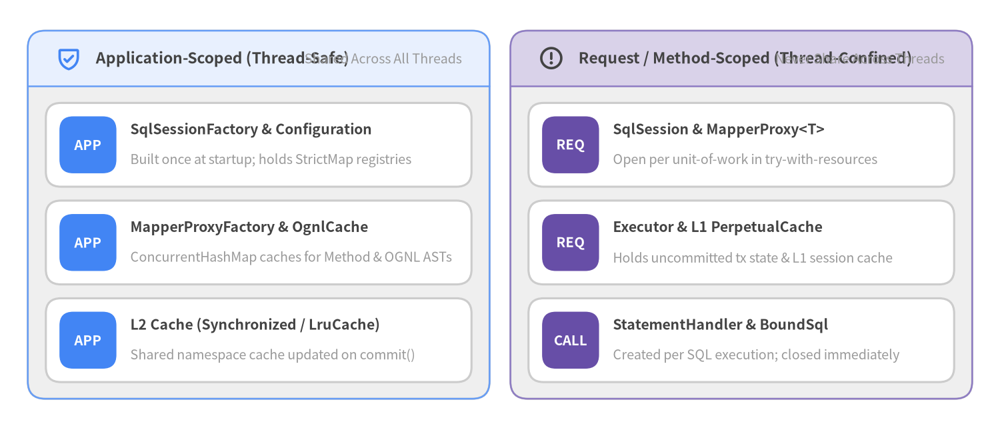

MyBatis 3 Internal Architecture Overview
Unofficial Source-Code Architecture Guide (
v3.6.0) — Grounded in static AST analysis (393Java source files,23,364LOC,374classes across20packages underorg.apache.ibatis.*) and hermetic JUnit 5 verification (1,990tests passed,87.4%JaCoCo line coverage).
MyBatis 3 (org.mybatis:mybatis) is engineered around a 3-Tier Layered Data-Mapper & Interceptor Pipeline rather than a heavyweight stateful Unit-of-Work / Persistence Context ORM. Instead of generating SQL from entity graphs at runtime, MyBatis compiles XML configuration/mapper files and Java annotations at bootstrap into an immutable Configuration registry of MappedStatement and ResultMap objects, and dispatches every call through four pluggable runtime collaborates: Executor, StatementHandler, ParameterHandler, and ResultSetHandler.

Source Code
from drawlib.canvas import save, setup
from drawlib.diagrams.architecture import ArchitectureDiagram, Node, NodeGroup, PhosphorIcon
from drawlib.styles import Colors, Styles
setup(width=144, height=62, dpi=150)
d = ArchitectureDiagram(
node_style=Styles.Dark,
node_text_style=Styles.DarkBold.patch(text_size=10.0),
edge_style=Styles.Dark.patch(line_width=1.5),
edge_text_style=Styles.DarkBold.patch(text_size=9.5),
node_card_style=Styles.Neutral.patch(shape_fill_color=Colors.White),
)
t1 = d.add(
NodeGroup(
"Tier 1: Session & Proxy",
width=40,
height=52,
style=Styles.PrimaryNeutral,
text_style=Styles.DarkBold.patch(text_size=10.5, halign="left", valign="top"),
),
xy=(4, 5),
)
n_proxy = t1.add(
Node(
"MapperProxy<T>\n& MapperMethod",
icon=PhosphorIcon.CODE,
width=32,
height=16,
style=Styles.White,
text_style=Styles.WhiteBold.patch(text_size=10.0),
card_style=Styles.PrimaryFlat,
),
xy=(20, 35),
)
n_sess = t1.add(
Node("DefaultSqlSession\n& Configuration", icon=PhosphorIcon.STACK, width=32, height=16),
xy=(20, 13),
)
t2 = d.add(
NodeGroup(
"Tier 2: Executor & Scripting Pipeline",
width=52,
height=52,
style=Styles.SecondaryNeutral,
text_style=Styles.DarkBold.patch(text_size=10.5, halign="left", valign="top"),
),
xy=(48, 5),
)
n_exec = t2.add(
Node("CachingExecutor\n-> BaseExecutor", icon=PhosphorIcon.LIGHTNING, width=42, height=16),
xy=(26, 35),
)
n_stmt = t2.add(
Node("StatementHandler\n& BoundSql (OGNL)", icon=PhosphorIcon.TERMINAL_WINDOW, width=42, height=16),
xy=(26, 13),
)
t3 = d.add(
NodeGroup(
"Tier 3: Reflection & JDBC",
width=36,
height=52,
style=Styles.Neutral,
text_style=Styles.DarkBold.patch(text_size=10.5, halign="left", valign="top"),
),
xy=(104, 5),
)
n_res = t3.add(
Node("ResultSetHandler\n& MetaObject", icon=PhosphorIcon.SPARKLE, width=28, height=16),
xy=(18, 35),
)
n_jdbc = t3.add(
Node("TypeHandler<T>\n& PooledDataSource", icon=PhosphorIcon.DATABASE, width=28, height=16),
xy=(18, 13),
)
n_proxy.connect(n_sess, label="invoke()")
n_sess.connect(n_exec, label="query/update")
n_exec.connect(n_stmt, label="prepare()")
n_stmt.connect(n_jdbc, label="bind #{}")
n_jdbc.connect(n_res, label="ResultSet")
d.draw(xy=(0, 0))
save()
Core Architectural Pillars
| Pillar | Primary Packages (org.apache.ibatis.*) |
Key Classes | Architectural Guarantee |
|---|---|---|---|
| 1. Zero-Dependency Shading | ognl.* (shaded), javassist.* (shaded) |
OgnlCache, JavassistProxyFactory |
0 mandatory external runtime JARs; all 9 pom.xml dependencies are <optional>true</optional>. |
| 2. Bootstrap Lowering | builder, builder.xml, builder.annotation, mapping |
XMLConfigBuilder, XMLMapperBuilder, MapperAnnotationBuilder, MappedStatement |
Parses XML & annotations once at startup into thread-safe registries inside Configuration. |
| 3. JDK Dynamic Proxy Binding | binding, session.defaults |
MapperRegistry, MapperProxyFactory<T>, MapperProxy<T>, MapperMethod |
Eliminates DAO boilerplate; caches MapperMethodInvoker per Method in a ConcurrentHashMap. |
| 4. Two-Tier Caching & Interceptors | executor, cache, plugin |
CachingExecutor, BaseExecutor, TransactionalCache, Plugin |
L2 transactional namespace cache + L1 session cache + JDK proxy Interceptor chain. |
| 5. Composite Dynamic SQL AST | scripting.xmltags, scripting.defaults |
DynamicSqlSource, RawSqlSource, SqlNode, DefaultParameterHandler |
Evaluates <if>/<foreach> via cached OGNL ASTs and compiles #{} tokens into safe JDBC ? parameters. |
| 6. MetaObject Reflection & Hydration | executor.resultset, reflection, type |
DefaultResultSetHandler, MetaObject, Reflector, TypeHandlerRegistry |
Hydrates nested graphs, constructor args, and lazy proxies without external bean-mapping libraries. |
Object Lifecycle & Thread-Safety Scopes
Understanding MyBatis 3's internal concurrency design begins with the strict separation between application-scoped immutable metadata and request-scoped stateful execution:

Source Code
from drawlib.canvas import save, setup
from drawlib.icons import phosphor
from drawlib.smartarts import CardList, Panel
from drawlib.styles import Colors, Styles
setup(width=144, height=62, dpi=150)
white_card = Styles.Neutral.patch(shape_fill_color=Colors.White)
left_panel = Panel(
"Application-Scoped (Thread-Safe)",
"Shared Across All Threads",
style=Styles.Neutral,
header_style=Styles.PrimaryNeutral.patch(shape_line_width=1.2),
text_style=Styles.DarkBold.patch(text_size=11.0),
description_style=Styles.Muted.patch(text_size=9.5),
icon=phosphor.shield_check,
icon_style=Styles.PrimaryBold,
header_variant="filled",
header_height=8.0,
)
left_panel.draw((4.0, 4.5), width=66.5, height=53.0, align="bottom_left")
l_xy, l_w, l_h = left_panel.get_content_box(
(4.0, 4.5), width=66.5, height=53.0, padding=(2.6, 2.4), align="bottom_left"
)
app_cards = CardList(
style=white_card,
text_style=Styles.DarkBold.patch(text_size=10.2),
description_style=Styles.Muted.patch(text_size=9.5),
badge_shape="rounded_rect",
badge_style=Styles.PrimaryFlat,
badge_text_style=Styles.WhiteBold.patch(text_size=9.8),
direction="vertical",
spacing=2.0,
)
app_cards.add(
"SqlSessionFactory & Configuration",
"Built once at startup; holds StrictMap registries",
badge_text="APP",
)
app_cards.add(
"MapperProxyFactory & OgnlCache",
"ConcurrentHashMap caches for Method & OGNL ASTs",
badge_text="APP",
)
app_cards.add(
"L2 Cache (Synchronized / LruCache)",
"Shared namespace cache updated on commit()",
badge_text="APP",
)
app_cards.draw(l_xy, width=l_w, height=l_h, align="bottom_left")
right_panel = Panel(
"Request / Method-Scoped (Thread-Confined)",
"Never Share Across Threads",
style=Styles.Neutral,
header_style=Styles.SecondaryNeutral.patch(shape_line_width=1.2),
text_style=Styles.DarkBold.patch(text_size=11.0),
description_style=Styles.Muted.patch(text_size=9.5),
icon=phosphor.warning_circle,
icon_style=Styles.WarningBold,
header_variant="filled",
header_height=8.0,
)
right_panel.draw((73.5, 4.5), width=66.5, height=53.0, align="bottom_left")
r_xy, r_w, r_h = right_panel.get_content_box(
(73.5, 4.5), width=66.5, height=53.0, padding=(2.6, 2.4), align="bottom_left"
)
req_cards = CardList(
style=white_card,
text_style=Styles.DarkBold.patch(text_size=10.2),
description_style=Styles.Muted.patch(text_size=9.5),
badge_shape="rounded_rect",
badge_style=Styles.SecondaryFlat,
badge_text_style=Styles.WhiteBold.patch(text_size=9.8),
direction="vertical",
spacing=2.0,
)
req_cards.add(
"SqlSession & MapperProxy<T>",
"Open per unit-of-work in try-with-resources",
badge_text="REQ",
)
req_cards.add(
"Executor & L1 PerpetualCache",
"Holds uncommitted tx state & L1 session cache",
badge_text="REQ",
)
req_cards.add(
"StatementHandler & BoundSql",
"Created per SQL execution; closed immediately",
badge_text="CALL",
)
req_cards.draw(r_xy, width=r_w, height=r_h, align="bottom_left")
save()
Chapter Guide
- 3-Tier Package Topology & Shading — How the 20 packages under
org.apache.ibatis.*stratify into Public Session/Proxy, Core Execution/Scripting, and Foundation Reflection/Type/IO layers, plus howmaven-shade-pluginembeds OGNL and Javassist. - Bootstrap Compilation & Builders — How
SqlSessionFactoryBuilder,XMLConfigBuilder,XMLMapperBuilder, andMapperAnnotationBuilderlower XML & annotations intoConfigurationandStrictMap. - JDK Dynamic Proxy & Mapper Dispatch — How
MapperRegistry,MapperProxyFactory<T>,MapperProxy<T>, andMapperMethodroute interface method calls toSqlSessioncommands. - Executor Pipeline, L1/L2 Caching & Plugin Interceptors — Inside
BaseExecutor(Simple,Reuse,Batch),CachingExecutor,TransactionalCacheManager, andPlugin.wrap()interceptor chains. - Dynamic SQL AST, OGNL & Parameter Binding — How
XMLLanguageDriverbuildsRawSqlSourcevs.DynamicSqlSource, evaluatesSqlNodetrees viaOgnlCache, and binds parameters inDefaultParameterHandler. - ResultSet Hydration, MetaObject Reflection & Lazy Proxies — How
DefaultResultSetHandler,MetaObject,Reflector, andJavassistProxyFactoryhydrate nested object graphs and on-demand lazy properties.